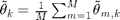
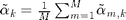
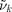
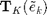
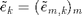
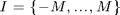
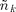
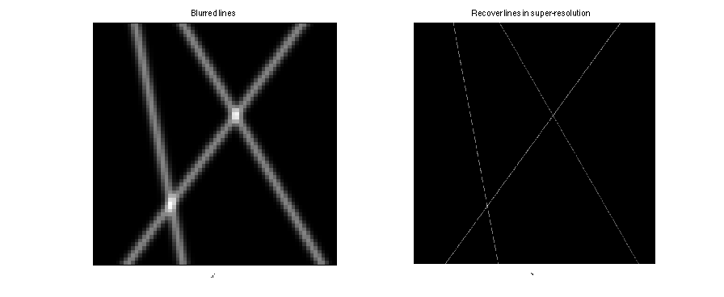

Recovering parameters of lines by the Prony method
Parameters of the considered image
T=0; % extra crop of the image if necessary Ht=1*(Hs-2*T); % height of the considered image Nt=(H-1)/2+S-T; % center of the considered image
Image on which the Prony method is performed
%wrtronc=wstar(T+1:end-T,M+1:end); % test on exact solution wrtronc=wr(T+1:end-T,:); % minimization solution wr wrsym=[fliplr(conj(wrtronc(:,2:end))) wrtronc]; % symetrize the image
Variables declaration
hm=zeros(M,K+1); % estimated singular vector h_m of T_K(\hat w_m) xim=zeros(M,K); % estimated roots xi_{m,k} on each column m freqm=zeros(M,K); % estimated frequencies ~f_{m,k} on each column m theta=zeros(M,K); % estimated angles ~theta_{m,k} on each column m dm=zeros(M,K); % estimated vector d_m of the least square system cktilde=zeros(M,K); % estimated atoms coefs ~c_{m,k} on each column m alpha=zeros(M,K); % estimated amplitude ~alpha_{m,k} on each column m expphi=zeros(M,K); % estimated coefficients ~e_{m,k} on each column m thetamean=zeros(1,K); % estimated angle ~theta_k of the k-th line alphamean=zeros(1,K); % estimated amplitude ~alpha_k of the k-th line eta=zeros(1,K); % estimated hor. offset ~eta_k of the k-th line
Perform the Prony method on columns of the right part of wrsym
for m=1:M whatm=wrsym(:,M+1+m); Tk=toeplitz(whatm(K+1:end),whatm(K+1:-1:1)); [V1,D,V2]=svd(Tk,0); hm(m,:)=flipud(V2(:,K+1)); xim(m,:)=roots(hm(m,:)); freqm(m,:)=angle(conj(xim(m,:)))/(2*pi); theta(m,:)=-atan(W*freqm(m,:)/m); [theta(m,:),Ind]=sort(theta(m,:)); freqm(m,:)=freqm(m,Ind); dm(m,:)=pinv(exp(1i*2*pi*(-Nt:Nt)'*freqm(m,:)))*whatm; cktilde(m,:)=abs(dm(m,:)); alpha(m,:)=cktilde(m,:).*cos(theta(m,:)); expphi(m,:)=dm(m,:)./abs(dm(m,:)); end
Compute the mean of all estimated angles  and amplitudes 
for k=1:K thetamean(k)=mean(theta(:,k)); alphamean(k)=mean(alpha(:,k)); end
Compute the frequency  as previously from  with  and  ; and then deduce estimated offset 
for k=1:K ek=expphi(:,k); Tk=toeplitz(ek(2:end),ek(2:-1:1)); [V1,D,V2]=svd(Tk,0); eta(k)=-W*angle(conj(roots(flipud(V2(:,2)))))/(2*pi); end
Display the estimated parameters and the relative errors
disp(['thetamean = ',num2str(thetamean)]); disp(['alphamean = ',num2str(alphamean)]); disp(['eta = ',num2str(eta)]); % Relatives errors [ss ii] = sort(t_k); disp(['(thetamean-t_k)/t_k = ',num2str((thetamean-t_k(ii))./t_k(ii))]); disp(['(alphamean*coef-a_k)/a_k = ',num2str((alphamean*coef-a_k(ii))./a_k(ii))]); disp(['eta-p_k = ',num2str(eta-p_k(ii))]);
thetamean = -0.62672 0.18368 0.52158 alphamean = 228.4453 218.3839 164.4555 eta = -0.0905946 -15.0978 10.151 (thetamean-t_k)/t_k = -0.0025467 -0.064539 -0.0038565 (alphamean*coef-a_k)/a_k = -0.55587 -0.57543 -0.68027 eta-p_k = -0.090595 -0.097792 0.15105
Display the deblurred lines on a super-resolution image
homot=7; N2 = linspace(1/homot,H,1000); mat = zeros(homot*H,homot*W); for k=1:K N1 = tan(thetamean(k))*(N2-(H+1)/2)+M+eta(k); posind = (N1>=1/homot) & (N1<=W); % negative y-axis coordinates are not displayed index = sub2ind(size(mat),round(homot*N2(posind)),round(homot*N1(posind))); mat(index) = mat(index)+alphamean(k); end % periodize to the left of the image (-W) for k=1:K N1 = tan(thetamean(k))*(N2-(H+1)/2)+M+eta(k)-W; posind = (N1>=1/homot) & (N1<=W); % negative y-axis coordinates are not displayed index = sub2ind(size(mat),round(homot*N2(posind)),round(homot*N1(posind))); mat(index) = mat(index)+alphamean(k); end % periodize to the right of the image (+W) for k=1:K N1 = tan(thetamean(k))*(N2-(H+1)/2)+M+eta(k)+W; posind = (N1>=1/homot) & (N1<=W); % negative y-axis coordinates are not displayed index = sub2ind(size(mat),round(homot*N2(posind)),round(homot*N1(posind))); mat(index) = mat(index)+alphamean(k); end f=figure; subplot(1,2,1); imagesc(xstar); colormap gray; axis image; title('Blurred lines'); xlabel('$$x^{\sharp}$$','Interpreter','latex'); set(gca,'xtick',[],'ytick',[]); subplot(1,2,2); imshow(mat/max(max(mat))); title('Recover lines in super-resolution'); xlabel('$$s^{\sharp}$$','Interpreter','latex'); set(gca,'xtick',[],'ytick',[]); truesize(f,[300 300]);